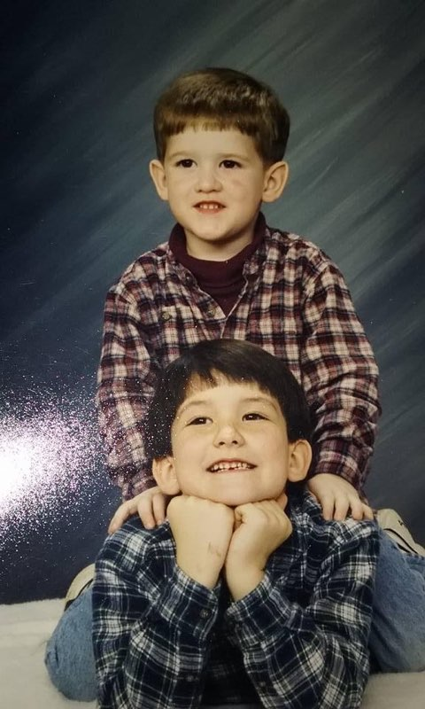
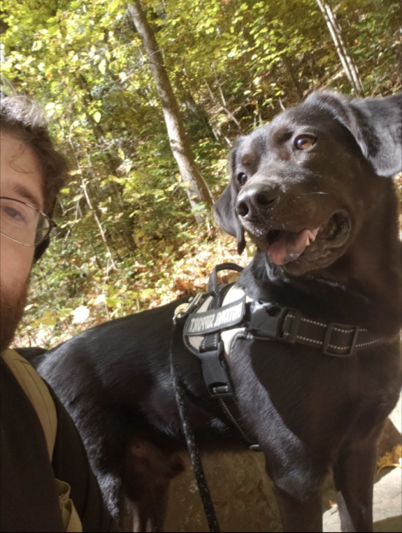
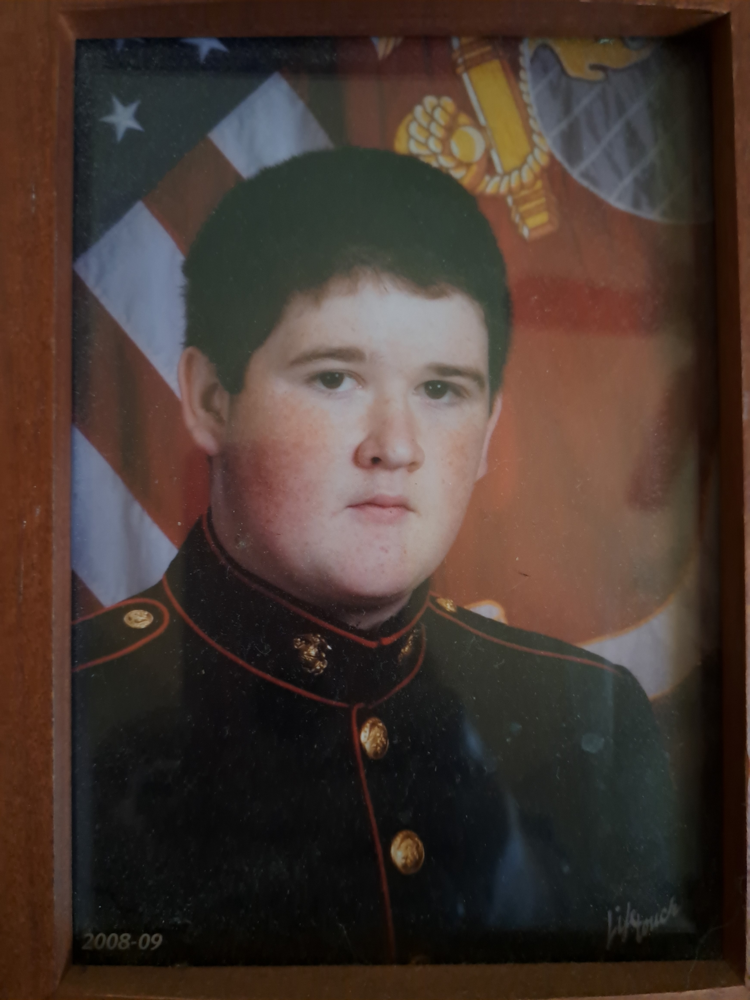

Christopher grew up in a small town in Georgia, called Senoia.
Christopher stayed outside with friends, playing sports and any game they could come up with.
Christopher grew up with others who are family to him now, they stayed at each others houses and they are all like brothers and sisters.
Christopher has a older brother and younger sister. Christopher played baseball and was in Marine JROTC in high school.
He enjoyed the outdoors and fishing, he cooked with his granny alot, and he learned alot about hunting and nature from his pawpaw.
His brother taught him how to protect himself and taught him alot of life skills like work ethic, respect, and how to be a good man.
His family now, after many hard years is a very close knit family.